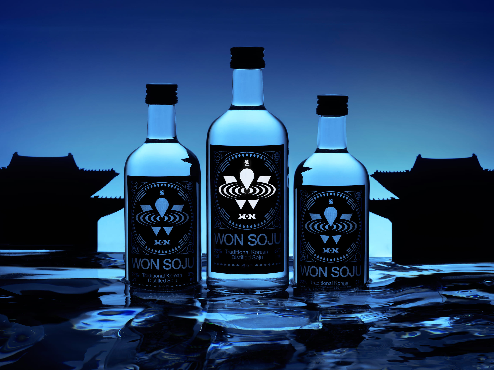
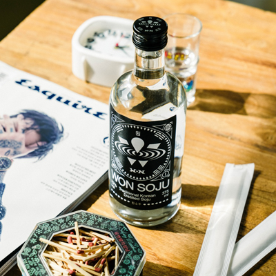
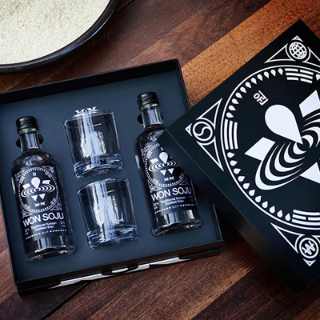

FOR THE PAST&TO THE FUTURE - 원소주
2014년 9월 14일
WONSOJU는 전통 증류식 소주로 새로운 글로벌 스탠다드, 국가대표 소주가 될 수 있도록 최선을 다하고 있습니다.
STEP 01 - 원소주는 국내산 쌀 100%로 만들어졌습니다.
소주의 개발은 강원도 원주의 모월, 충청북도 충주의 고헌정 등 국내 양조장들과 협업하였으며 원소주 역시 대한민국 전통주로 국내산 쌀 100%로 생산됩니다. 도수는 22도로 출시되며 국내산 쌀 생산으로 지역특산주로 분류되어 온라인 몰에서 만나실 수 있습니다.
STEP 02 - 옹기 숙성을 통해 더욱 부드러운 소주 맛을 느낄 수 있습니다.
전통 증류식 방식으로 생산되며 증류 후 옹기에서 2주 동안 숙성되는 과정을 반드시 거치는데 그 과정에서 목 넘김이 깔끔하고 부드러운 특징을 품게 됩니다. 혀에 닿을 땐 자극적인 느낌이 없고, 향이나 맛이 둥글다는 인상을 주며, 끝 맛은 약주처럼 약간의 구수함도 살짝 느껴집니다.
Twitter로 공유
Facebook으로 공유
+Google+로 공유
관련 기사
'박재범 원소주'는 온라인서 파는데 '백세주'는 왜 안되지?
‘박재범 소주’ 마침내 나온다…더현대서울서 팝업스토어
박재범이 만든 소주, 원소주
원소주, 온라인몰 공식 론칭